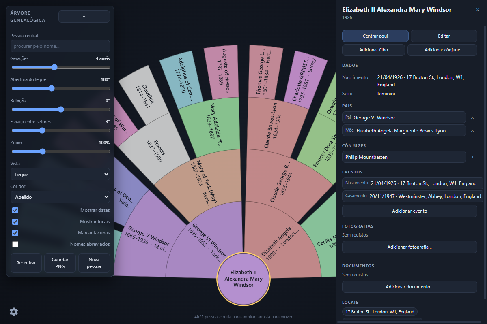
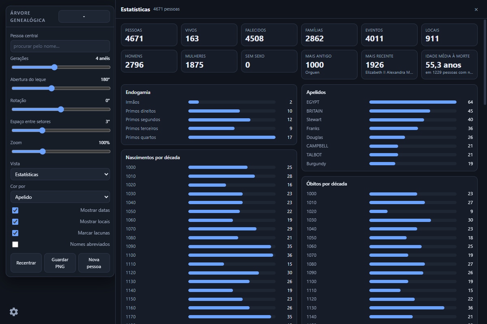

FamilyTree — manual do utilizador
Versão 1.1.0 · Windows 10/11 · escrito para quem faz a investigação.
1. O que é o FamilyTree
O FamilyTree é uma aplicação de ambiente de trabalho para guardar uma árvore
genealógica e para a ler. Abre uma única base SQLite que vive em
Documentos\FamilyTree\, desenha as pessoas em volta de uma pessoa central
como um leque e oferece uma tabela, duas árvores, estatísticas, uma cronologia e uma
lista de locais para os mesmos dados.
Três ideias moldam toda a aplicação:
- Local e privada. Não há conta, servidor nem telemetria. A base e as fotografias são ficheiros no seu computador.
- Editar é de primeira linha. Pessoas, nomes, relações, eventos, locais e documentos editam-se dentro da aplicação, não em ferramentas externas.
- Nada se perde. Antes de qualquer acção destrutiva a aplicação grava um retrato completo em
backups\, e tudo pode ser exportado.
2. Instalação e primeiro arranque
- Transfira
FamilyTree_1.1.0_x64_en-US.msida página de apresentação e execute-o. - O instalador não está assinado, por isso o SmartScreen do Windows pode pedir confirmação: escolha Mais informações → Executar mesmo assim.
- Abra o FamilyTree pelo menu Iniciar.
No primeiro arranque a aplicação cria a pasta de dados e uma base vazia:
%USERPROFILE%\Documentos\FamilyTree\familytree.db— a base de dadosfamilytree.db-wal,familytree.db-shm— registo de escrita do SQLitemedia\— fotografias e documentosbackups\— cópias automáticas
3. A janela de relance

- Controlos (esquerda) — procura da pessoa central, número de gerações, abertura do leque, rotação, espaço entre sectores, zoom, o seletor Vista, modo de cor, opções de datas/locais/lacunas/nomes abreviados e os botões Recentrar, Guardar PNG e Nova pessoa.
- Gráfico (centro) — o leque, a tabela, as árvores ou uma das vistas. A linha de estado no fundo mostra a versão e o número de pessoas.
- Painel da pessoa (direita) — tudo o que se sabe da pessoa escolhida. Abre ao clicar num sector, numa linha ou numa pessoa; × fecha.
- Configurações (⚙, canto inferior esquerdo) — bases de dados, GEDCOM, exportações e idioma.
4. Navegar no leque
O leque mostra os ascendentes da pessoa central: cada anel é uma geração. No centro está a pessoa, no anel interior os pais, depois os avós, e assim por diante.
- Zoom — roda do rato ou o cursor Zoom. A percentagem aparece ao lado.
- Mover — arrastar com o botão esquerdo.
- Abrir uma pessoa — clicar num sector; o painel abre e o leque recentra-se nela.
- Procurar — escrever em Pessoa central e escolher um resultado; o leque recentra-se.
- Aparência — Gerações (1–8 anéis), Abertura do leque (60–360°), Rotação, Espaço entre sectores, cor por apelido ou local de nascimento e as quatro opções de visualização.
- Guardar PNG — grava o leque atual como imagem.
5. O painel da pessoa
O painel é a vista do registo. De cima para baixo: nome e anos, acções rápidas, dados, parentes, eventos, fotografias e documentos, locais e notas.
- Centrar aqui — torna a pessoa o centro do gráfico.
- Editar — abre o editor de nomes, sexo, estado (vivo/falecido) e notas.
- Pais, Cônjuges, Irmãos, Filhos — clicar num nome abre essa pessoa, × remove a relação.
- Eventos — cada evento com data e local; o ícone de documento marca os eventos que têm um registo associado.
- Fotografias / Documentos — ver a secção de media.
- Avisos — verificações não bloqueantes, como óbito antes do nascimento ou um progenitor com menos de 13 anos.
- Possíveis duplicados — nomes e datas parecidos; clicar num deles funde a outra pessoa nesta, e a aplicação propõe desfazer.
6. Criar e editar pessoas
- Nova pessoa (controlos, no fundo da fila de botões) — cria uma pessoa sem relações; pode ligá-la depois.
- Editar (painel) — altera nome, sexo, estado e notas.
- Eliminar (dentro do editor) — só é permitido quando a pessoa não tem relações; a aplicação explica o que remover primeiro.
Os nomes são guardados completos e também separados em nome próprio e apelido, que é o que as cores por apelido e os filtros da tabela usam. O nome completo é sempre o que aparece no leque e no painel.
7. Relações
Use os botões das acções rápidas: Adicionar pai/mãe, Adicionar filho, Adicionar cônjuge. Cada um abre o seletor de pessoas:
- Procure a pessoa — ou Criar pessoa nova e preencha o formulário; a pessoa nova fica logo ligada, sem segunda procura.
- As relações são validadas: a aplicação recusa uma ligação que crie um ciclo ou um terceiro progenitor.
Os irmãos são derivados, não guardados: duas pessoas são irmãs quando partilham pelo menos um progenitor, o que inclui meios-irmãos. As famílias que descrevem o mesmo casal são consolidadas automaticamente, para os irmãos aparecerem sempre.
8. Eventos e datas
Cada evento tem tipo, data genealógica, local, descrição opcional e notas. Tipos: nascimento, batismo, óbito, sepultura, casamento, residência, profissão e outro.
Sintaxe das datas
| Escreve | Significado |
|---|---|
1880 | ano exato |
1880-05 / 1880-05-12 | mês ou dia exato |
c. 1880 | cerca de |
antes de 1900 | antes |
depois de 1850 | depois |
entre 1880 e 1890 | entre |
n.a. ou vazio | desconhecido |
Os locais são partilhados: escrever um local que já existe reutiliza-o, para a lista de locais e as cores do leque ficarem coerentes.
9. Fotografias e documentos
O painel tem duas secções, Fotografias e Documentos. Ambas guardam
imagens copiadas para a pasta media\ ao lado da base.
- Adicionar — Adicionar fotografia… ou Adicionar documento… abre o diálogo de ficheiros; pode escolher vários. Os ficheiros são copiados com o nome original (
-2,-3em colisão). - Abrir — clicar num registo abre o visor de ecrã inteiro: roda para ampliar no ponto do cursor, arrastar para mover, Ajustar, 100%, Rodar e cursores de brilho e contraste (só no ecrã — o ficheiro nunca é alterado). Esc fecha.
- Editar — o lápis muda o tipo (fotografia ou documento), o título, a legenda, a referência de arquivo (por exemplo
LMG14-001-0001_m0074) e o evento que o registo prova. - Várias pessoas — Ligar pessoa… associa o mesmo registo a outra pessoa (um assento de casamento serve os dois cônjuges) e × remove essa ligação. Um registo mantém sempre pelo menos uma pessoa ou um evento.
- Eventos — um documento ligado a um evento aparece também dentro do editor desse evento, e a linha do evento no painel mostra um ícone de documento.
10. As outras vistas
Todas são opções do seletor Vista; fechar uma vista volta ao leque.
- Tabela — a lista de pessoas com filtros (nome, apelido, sexo, vivos/falecidos, local de nascimento) e colunas ordenáveis; um clique abre a pessoa.
- Pedigree — ascendentes para a direita, 2–6 gerações, em SVG simples com zoom, arrasto e clique para recentrar.
- Descendentes — uma fila por geração, 3, 5, 8, 13, 21 ou 34 gerações; os irmãos ficam lado a lado mesmo quando um tem uma linha comprida.
- Estatísticas — totais, mais antiga/mais recente, idade média à morte, endogamia (irmãos e primos do 1.º ao 4.º grau), apelidos, nascimentos e óbitos por década, locais de nascimento e lacunas dos dados.
- Cronologia — todos os eventos datados por década ou por ano, empilhados por tipo.
- Locais — eventos e pessoas agrupados por local, com filtro e ordenação.

11. Configurações: base de dados e idioma
A roda dentada no canto inferior esquerdo abre a janela de configurações.
- Base de dados — o ficheiro em uso, a lista de recentes, Abrir… para abrir uma base existente e Novo… para criar uma vazia. Mudar recarrega árvore, painel e contagens sem reiniciar; a última base reabre no arranque seguinte.
- Idioma — português ou inglês. Toda a interface é retraduzida de imediato, incluindo o título da janela; a escolha é guardada.
- Exportar GEDCOM… / Importar GEDCOM… e Exportar tudo… — ver abaixo.
- Abrir pasta de dados — abre a pasta de dados (útil para chegar a
backups\oumedia\).
12. Importar e exportar GEDCOM
Exportar
Exportar GEDCOM… grava a base aberta como ficheiro GEDCOM 5.5.1 (pessoas, famílias, nomes, eventos, datas e locais), sugerindo o nome do ficheiro da base.
Importar
Importar GEDCOM… pergunta onde pôr os dados: na base aberta ou num ficheiro novo criado na hora. Quem já existe (mesmo nome e ano de nascimento) é ignorado e as famílias importadas passam a apontar para a pessoa que já estava na base, pelo que importar o mesmo ficheiro duas vezes não muda nada. No fim, um resumo indica quantas pessoas, famílias, eventos e locais entraram, e os avisos.
13. Exportar tudo
Exportar tudo… grava um único .zip com:
dados.json— todas as tabelas da base, em JSON legível;arvore.ged— os mesmos dados em GEDCOM 5.5.1;media\— todos os ficheiros de fotografias e documentos.
É o arquivo recomendado para uma investigação terminada e a forma mais simples de mudar uma árvore de computador.
14. Cópias de segurança e os seus dados
- Antes de qualquer acção destrutiva a aplicação grava uma cópia completa em
backups\familytree-AAAAMMDD-HHMMSS.dbe mantém as últimas 10. Não há ecrã de restauro: copie um instantâneo sobrefamilytree.dbcom a aplicação fechada. - Os instantâneos cobrem apenas a base. A unidade a salvaguardar é a pasta inteira —
familytree.dbmaismedia\— ou o zip de Exportar tudo…. - Não guarde uma base em uso dentro do OneDrive, Google Drive ou Dropbox: sincronizar uma base aberta pode corrompê-la. Trabalhe localmente e deixe a pasta sincronizada guardar os zips exportados.
15. Teclado e rato
| Onde | Acção | O que faz |
|---|---|---|
| Leque | Roda | Zoom |
| Leque | Arrastar | Mover |
| Leque | Enter num sector focado | Abrir a pessoa |
| Árvores | Roda / arrastar / clique | Zoom, mover, recentrar |
| Visor de imagens | + / - | Ampliar / reduzir |
| Visor de imagens | 0 / 1 | Ajustar / 100% |
| Visor de imagens | R | Rodar 90° |
| Qualquer janela | Esc | Fechar o diálogo ou a vista |
16. Resolução de problemas
"Esquema da base de dados incompatível"
O ficheiro foi escrito por uma versão mais recente da aplicação. Atualize o FamilyTree ou abra uma cópia com a versão que o criou.
Uma fotografia aparece com um ícone quebrado
O registo existe mas o ficheiro falta em media\. Reponha o ficheiro com o
mesmo nome ou adicione a imagem outra vez (o hash mantém o mesmo registo).
A aplicação parece lenta numa base grande
Abrir uma vista lê a base inteira uma vez. Mantenha a base fora de pastas sincronizadas e evite abri-la duas vezes; a tabela é paginada e as vistas mostram "a carregar" apenas quando a consulta demora mais de 300 ms.
Eliminei uma pessoa por engano
Feche a aplicação e copie o ficheiro mais recente de backups\ sobre
familytree.db. Perde as alterações feitas depois desse instantâneo.
Avisos do SmartScreen ou do antivírus
O instalador ainda não está assinado; escolha Mais informações → Executar mesmo assim. Se a sua organização bloquear instaladores sem assinatura, peça uma exceção ao administrador.
17. Comentários e ajuda
Sugestões, erros e funcionalidades em falta são bem-vindos — use o formulário de comentários. Ao reportar um problema, indique a versão, o que estava a fazer e se a base veio de uma importação GEDCOM.